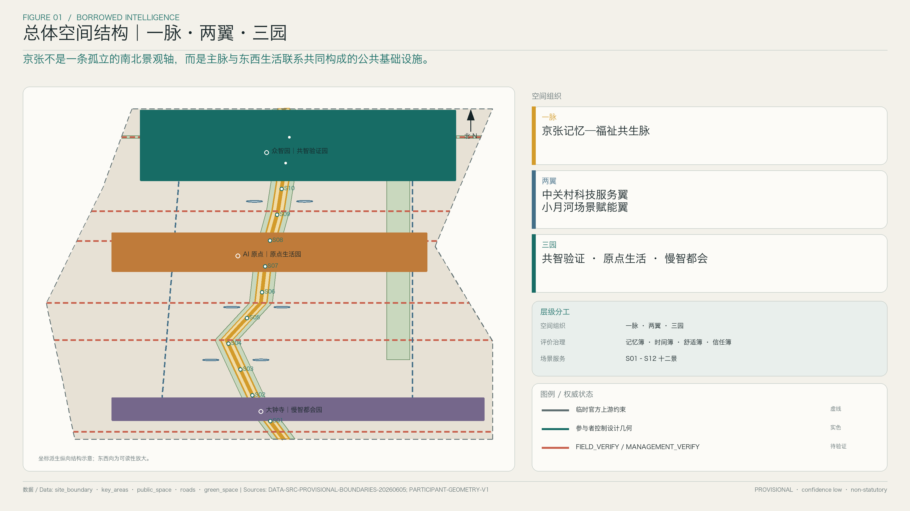
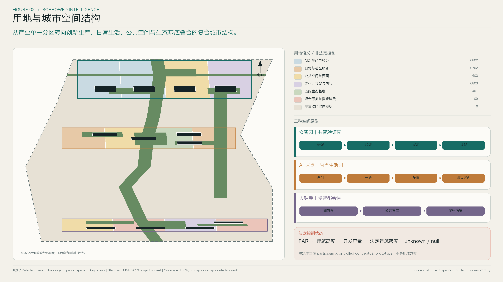
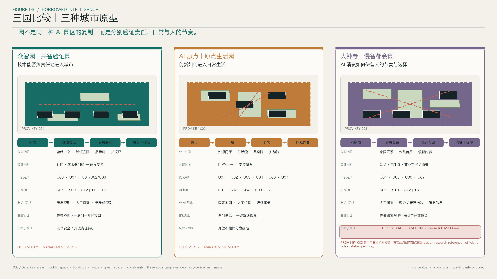
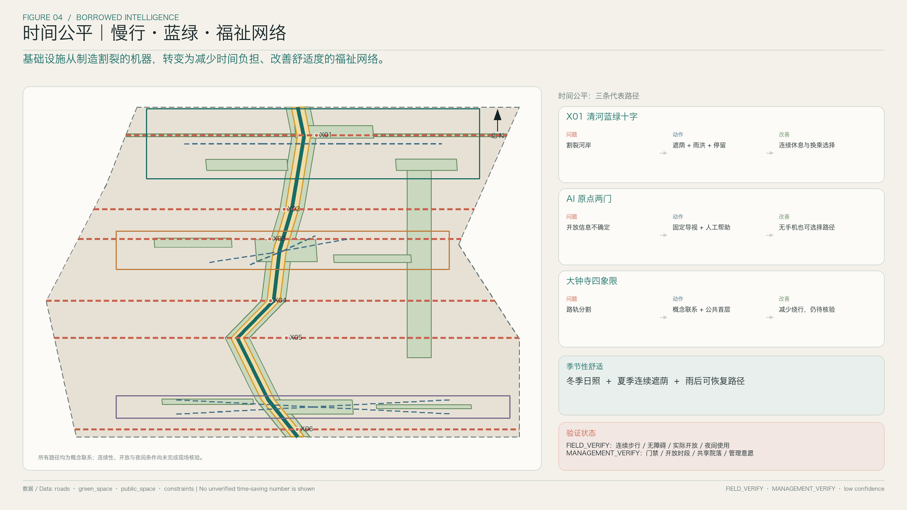
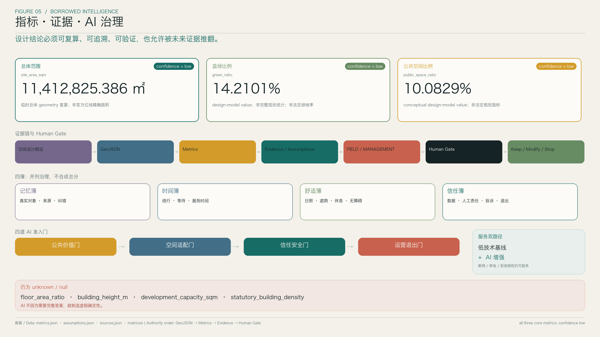

统筹研究范围
产业—空间—要素—治理机制；支撑 AI 创新生态、人才与公共场景。
以记忆校准智能，以福祉衡量未来
不是为城市叠加技术展品，而是把记忆、步行、舒适、公共选择与可退出的智能服务组织成一套可验证的公共基础设施。
English version统筹研究范围解释创新带为何在此形成；总体设计范围把产业目标转成公共空间网络；重点区域以三种城市原型检验总体判断。
产业—空间—要素—治理机制；支撑 AI 创新生态、人才与公共场景。
一脉、两翼、三园；叠合用地分区、建筑原型、交通慢行、蓝绿公共空间与更新项目。
众智园、AI 原点、大钟寺采用同一问题模板，保持可比较的中等设计深度。
京张不能只是一条南北景观轴；南北主脉必须通过六道东西向生活缝合，才能成为日常城市公共基础设施。

一脉两翼三园
四簿，不合成总分
十二景，低技术基线 + AI 增强
铁路、环路、河流、围界和大型地块共同增加步行时间与机会成本。设计以低技术基线先修复可达、休息、遮荫、求助与选择，再谨慎加入 AI 增强。
固定导视、纸质说明、人工服务、普通结账、连续座椅与无障碍基本条件持续可用。
AI 只在公开目的、最少数据、人工复核、可暂停与可退出条件下增强服务。
从产业单一分区转向创新生产、日常生活、公共空间与生态基底的复合结构。AI 场景只作为叠加层，不创造法定用地类别。

三个重点区分别回答责任、日常与人的节奏，并采用相同信息模板保持可比较性。
技术能否负责任地进入城市？
创新如何进入日常生活？
AI 消费如何保留人的节奏与选择？

十二景不是造型地标。每一景先明确无需手机、联网和数据授权也可获得的公共服务，再说明 AI 能增加什么。
南北慢行主脉、六道东西生活缝合、轨道接驳、连续遮荫、雨洪空间和停留节点共同减少时间负担。待验证联系以状态标签而非确定工程线表达。

三项指标均由冻结 geometry 复算，confidence 为 low。它们用于保持 GeoJSON、正文与图件一致，不升级为法定规划结论。

floor_area_ratio、building_height_m、development_capacity_sqm、statutory_building_density：当前官方控制条件不足，不生成替代数字。
真实性与可追溯
步行与服务负担
日照、遮荫、休息、无障碍
数据、责任、申诉、退出
是否改善公共利益
是否适合具体场所
是否可解释、可申诉
是否有责任与停止机制
任务覆盖、自检状态、来源与假设保持可见；待验证内容不得表现成既成事实。
PROV-KEY-003：最新版官方 provisional geometry，仅用于机器校验。
真实大钟寺站、觉生寺与四象限步行关系：design-research reference，不是官方边界。
Issue #1029 = Open｜official_anchor_status = pending
空间设计假设 → GeoJSON → Metrics → Evidence / Assumptions → FIELD_VERIFY / MANAGEMENT_VERIFY → Human Gate → Keep / Modify / Stop
来源：冻结 Proposal V1、Geometry V1、Metrics V1、Evidence Contract V1 与五张核心图。权威顺序仍为 GeoJSON → metrics → matrices → manifest / sources / assumptions → proposal → figures → HTML。